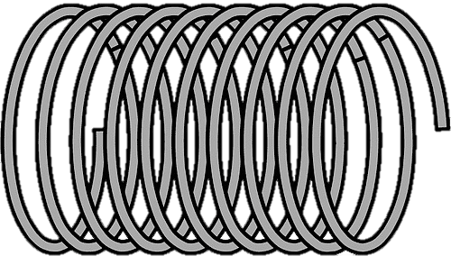
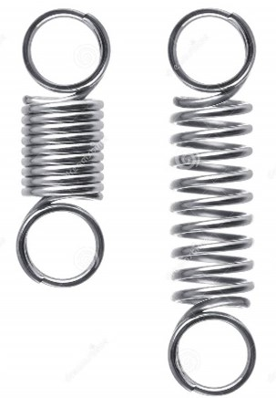
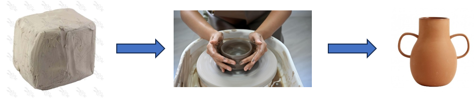

La elasticidad es una rama importante de la física
que estudia cómo los materiales responden a la
aplicación de fuerzas externas y cómo se deforman y
recuperan su forma original cuando estas fuerzas
se retiran.

El concepto central en la elasticidad es el
de la deformación. Cuando se aplica una fuerza
a un material, este puede deformarse, es decir,
cambiar su forma o tamaño. La deformación puede
ser elástica o plástica. En una deformación
elástica, el material se deforma temporalmente
bajo la acción de la fuerza aplicada, pero una
vez que se retira la fuerza, el material vuelve
a su forma original. Por otro lado, en una
deformación plástica, el material experimenta
un cambio permanente en su forma incluso después
de retirar la fuerza.
En la práctica, los ingenieros y científicos
estudian el comportamiento elástico de los
materiales mediante la realización de pruebas
de tensión y compresión, donde se aplican
fuerzas controladas al material y se registran
las deformaciones resultantes. Estos datos se
utilizan para determinar propiedades
importantes del material, como su módulo de
elasticidad, resistencia a la tracción,
resistencia a la compresión, entre otros.
Los cuerpos deformables se clasifican en:
Cuerpos Elásticos
Los cuerpos elásticos son aquellos que,
bajo la influencia de una fuerza externa,
se deforman, pero tienen la característica
de volver a su forma natural. Estos
cuerpos tienen un punto límite de
deformación, mientras no se pase ese
límite el cuerpo volverá a tomar la
forma inicial.

Cuerpos Plásticos
Los cuerpos plásticos son aquellos que,
cuando se le aplica una fuerza externa y
se le retira, experimentan una deformación
permanente, y no pueden volver
completamente a su forma inicial y sufre
un cambio permanente.
